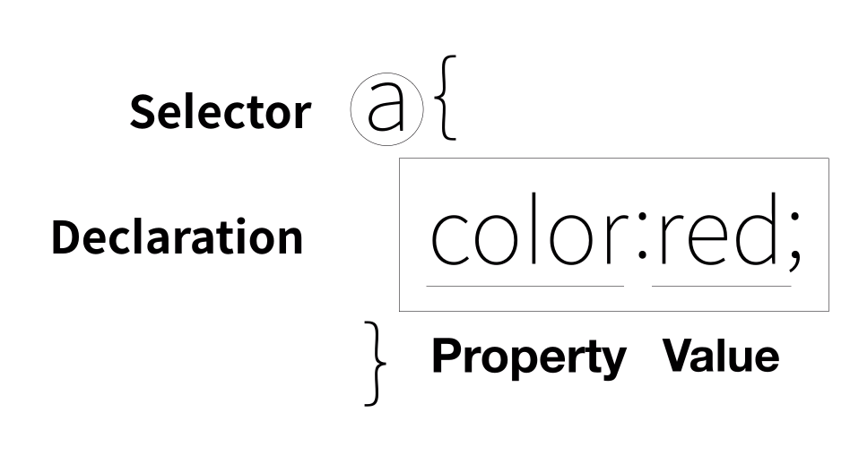
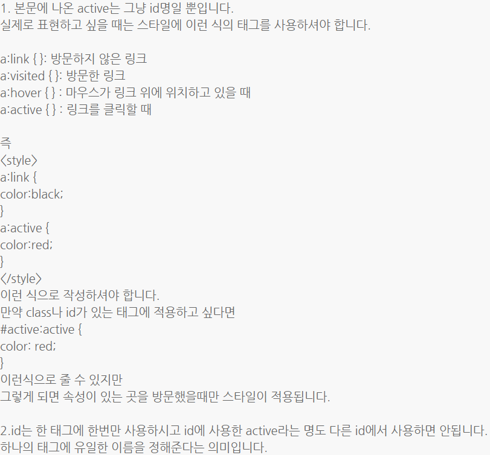

안녕하세요
오늘은 오후에 좀 놀고싶어서 오전에 css 공부를 하고 쉴까합니다.
밖에 진짜 너무 추워요... 마스크 위로 수증기가 나오면 속눈썹이 바로 얼어버려요... 말도 안된다 진짜ㅋㅋ
어쨋든 빨리 해봅시당

topic 4. 혁명적 변화
무엇을 모르는지 안다는 것은 검색할 수 있고, 질문할 수 있는 것이다.
topic 5. css 속성(property)를 스스로 알아내는 방법
어떤언어를 사용하는지, 무엇이 궁금한지, 등등에 대해서 구글에다가 검색하면 다 나옴 혼자서 끙끙 앓지않아도된다.
ex) h1태그의 크기를 키우거나 줄이고싶다 -> css text size property ,
h1 태그를 가운데 정렬하고싶다 -> css text center property 이런식으로 검색하면 나온다. value도 나온다.
검색하면 다 나오는데 굳이 다 외워야하나? no. 심지어 에디터가 추천까지 해주니까 기계에 도움을 받자
topic 6. css선택자(selector)를 스스로 알아내는 방법
*class라는 선택자는 .으로 사용되며 그룹핑하는 의미로 사용된다.
class라고하는 속성의 값은 여러개가 들어올 수 있고 띄어쓰기로 구분한다. 하나의 태그에는 여러개의 속성이 들어올 수 있고 여러개의 선택자를 통해서 하나를 공동으로 제어할 수 있다.
태그의 순서에 따라서 명령우선순위가 달라지는데 가장 밑에 있는 태그가 우선순위가 높다.
id선택자는 #을 사용하고 명령의 우선순위는 id선택자(#)>class선택자(.)>태그선택자인데 같은 선택자는 가장 마지막에 있는 선택자의 우선순위가 높다.
why? id의 값은 단 한번만 등장해야한다. 태그선택자는 포괄적이고 id선택자는 구체적이기때문에 우선순위가 id선택자가 더 먼저이다.
궁금하면 구글에 css selector라고 쳐보면됨!
